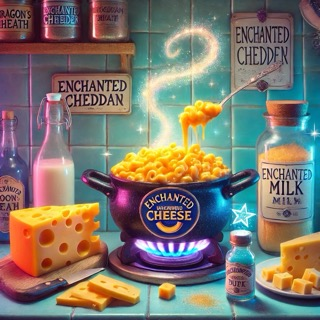

Mac And Cheese

Description
This is not my recipe for my other favorite dish, mac and cheese.
Ingredients
- 2 cups magic elbow noodles (imported from the land of bendy pasta)
- 3 blocks of enchanted cheddar cheese (sharp enough to cut through bad vibes)
- 1/2 cup of moonbeam milk (straight from the Milky Way)
- 1 tablespoon of butter of eternal smoothness
- A pinch of dragon's breath (also known as paprika)
- 3 teaspoons of unicorn tears (substitute with regular salt if unicorns are unavailable)
- 1/2 cup of pixie dust (or Parmesan cheese, but that’s way less fun)
- 1 teaspoon of spontaneous combustion powder (AKA cayenne pepper for brave souls)
- 1 overly dramatic onion (only to be used for tears)
Steps
- Summon your cauldron (or a regular pot, whatever works) and fill it with water from the River of Eternal Boil.
Set it on
high heat and wait for bubbling chaos to ensue.
- Add the magic elbow noodles and chant “Noodles bend, don’t break!” 7 times. Cook them until they achieve the
perfect al
dente balance between squish and snap.
- While the noodles are absorbing their powers, melt your butter of eternal smoothness in a pan over medium heat.
Add the
overly dramatic onion, and sauté until it cries rivers.
- Slowly pour in the moonbeam milk while whispering ancient dairy incantations, allowing the sauce to thicken.
- Grate the enchanted cheddar cheese (careful not to let it cut your soul) and stir it into the sauce until it
melts into
a cheesy, golden elixir of life.
- Toss in a pinch of dragon’s breath to give the dish a fiery kick and just the right amount of mystical
spiciness.
- Drain the now-alchemized noodles and mix them into the cheese sauce, ensuring each noodle is coated in gooey,
cheesy
magic.
- Sprinkle with pixie dust and unicorn tears, letting the flavors and whimsy of the universe bind the dish
together.
- For the courageous, a light dusting of spontaneous combustion powder will awaken the taste buds and possibly the
spirit
realm.
- Serve immediately before the cheese’s magic fades. Beware of spontaneous floating after consumption!
Enjoy!
I am obligated to say that the ingredients, steps, and image were generated by ChatGPT.